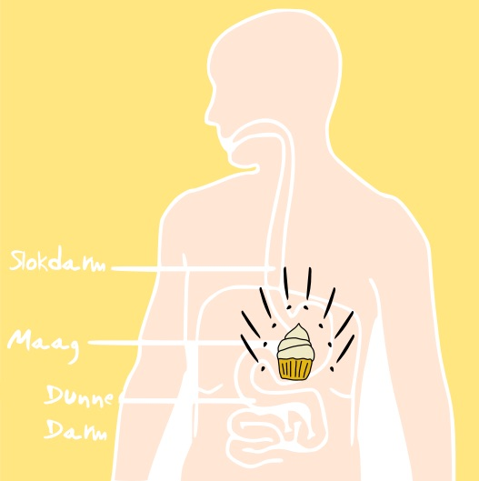
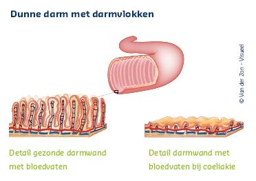
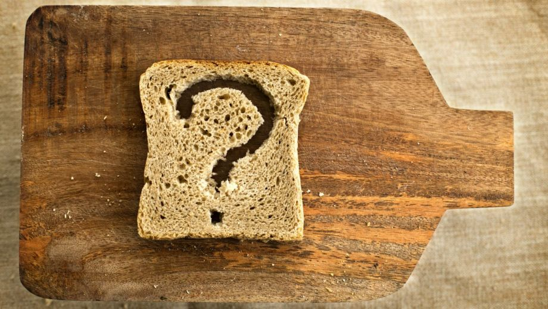

Coeliakie is een auto-immuunziekte die wordt geactiveerd als je gluten eet. Bij een auto-immuunziekte maakt je lichaam antistoffen tegen je eigen weefsels. als iemand met coeliakie gluten eet ontstaan er ontstekingsreacties in het darmslijmvlies van de dunne darm, hierdoor kan iemand heftige klachten krijgen. Gluten zijn een eiwit dat vooral in granen voorkomt, zoals tarwe, rogge en gerst, spelt en kamut. Veel van deze granen worden verwerkt in ons voedsel, bijvoorbeeld in brood, koek en crackers. Mensen die deze ziekte niet hebben weten vaak niet dat er in zoveel producten gluten zitten. Als mensen erachter komen dat ze coeliakie hebben, kun je heel veel niet meer eten. Je moet een hele andere eet style gaan zoeken. En dat is vaak even wennen. Gelukkig komen er steeds meer producten op de markt zonder gluten, want ook steeds meer mensen krijgen deze auto-immuunziekte. Vivamus
wat veroorzaakt coeliakie?

Coeliakie is dus een auto-immuunziekte waarbij het darmslijmvlies van de dunne darm is ontstoken. De dunne darm zorgt bij iemand zonder coeliakie ervoor dat er met plooien een ruw oppervlak ontstaat, hierdoor blijven voedingsstoffen aan wand plakken en kunnen ze in bloed worden opgenomen. Iemand met coeliakie heeft een gladde darmwand, hierdoor is het opnemen van voedingsstoffen erg moeilijk. Dit komt doordat de plooien en darmvlokken verdwijnen.
de klachten

De klachten van iemand met coeliakie zijn heel verschillend. Dit verschild heel erg per persoon. Mensen kunnen erge diarree krijgen, maar het kan ook zo zijn dat iemand veel verstoppingen heeft. Door het gebrek aan voedingsstoffen kunnen mensen veel afvallen, maar er zijn ook mensen die juist heel veel aankomen. De klachten hoeven niet alleen van de maag en darmen te komen. Mensen kunnen ook last hebben van depressiviteit, neerslachtigheid, botontkalking en slijtage aan tanden en kiezen. Je kunt zelfs coeliakie hebben zonder dat je klachten hebt. Doordat er geen duidelijke klachten zijn, wordt de diagnose coeliakie vaak pas na lange tijd vastgesteld.
de diagnose
Als je denkt coeliakie te hebben kun je daar achter komen door een bloedtest te doen. Als je coeliakie hebt zal de kans groot zijn dat er antistoffen in je bloed hebt. Als er geen antistoffen in het bloed zijn gevonden, hoeft dat niet te betekenen dat je geen coeliakie hebt. Een klein deel van de mensen maken geen antistoffen aan. Dan is het handig om verder onderzoek te doen. Voor verder onderzoek kom je uit bij de MDL arts. Hij zal een biopt nemen van de dunne darm. Tijdens dit onderzoek zullen er kleine hapjes van het weefsel van de dunne darm worden genomen. In het lab kunnen ze dan zien of je darmen beschadigd zijn.
coeliakie; en dan?

Op dit moment is er maar een behandeling van coeliakie mogelijk, namelijk een levenslang glutenvrij dieet. Mensen met coeliakie moeten zelf gaan ondervinden in wat ze daarbij lekker vinden. Iedereen moet hier een eigen draai in vinden. Ook in de ziekte coeliakie heb je verschillende gradaties. Dit kan worden aangetoond met een gastroscopie. De verschillende gradaties geven ook aan hoe heftig je klachten zijn op het eten van gluten. Sommige mensen met coeliakie worden al heel van ziek vak het eten van een gluut, terwijl andere mensen pas last krijgen bij het eten van een boterham. Als je erachter komt dat je coeliakie hebt, is het beste om op glutenvrij dieet te gaan. Hierdoor heb je geen klachten en beschadig je je darmen niet meer.